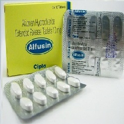

Alfuzosin ( Uroxatral )

Alfuzosinဆိုတာ ဘာလဲ
- Alfuzosin ဆိုတာ ကိုယ္တြင္းရွိ Alpha receptor အားပိတ္ျခင္းျဖင့္ ဆီးက်ိတ္ႏွင့္ ဆီးအိမ္ဝရွိ ႂကြက္သားမ်ားအား ေျဖေလ်ာ့ေစကာ ဆီးသြားရ လြယ္ကူေအာင္ ေဆာင္ရြက္ေပးေသာေဆး ျဖစ္ပါသည္။
ေဆးကိုဘယ္ေနရာေတြမွာသံုးလဲ
- Alfuzosin ကိုအဓိကအားျဖင့္ ဆီးက်ိတ္ႀကီးေသာ လူနာမ်ားတြင္ ဆီးသြားရခက္ျခင္း ေဝဒနာကိုသက္သာေစရန္သံုးပါတယ္။
- အျခားေသာ Alpha blocker မ်ားကဲ့သို႔ ေသြးေပါင္ခ်သည့္ေနရာတြင္ မသံုးပါ။
ေဆးရဲ႕ ဆိုးက်ိဳး ဘာေတြရွိလဲ
- ေခါင္းမူးျခင္းႏွင့္ ခ်ာခ်ာလည္ေအာင္မူးျခင္းတို႔ ျဖစ္တတ္ပါသည္။
- ေဆးမတည့္ျခင္း ျဖစ္ႏိုင္ေသာ္လည္း ရွားပါသည္။
- ျပင္းထန္ေသာ ဆိုးက်ိဳးမ်ားအျဖစ္ သတိလစ္ျခင္း၊ ႏွလံုးခုန္ျမန္/ေႏွးျခင္းႏွင့္ ရင္ဘတ္ေအာင့္ျခင္းမ်ား ျဖစ္ႏိုင္ပါသည္။ အဆိုပါ ျပင္းထန္ေသာ ဆိုးက်ိဳးလကၡဏာမ်ားျဖစ္ပါက နီးစပ္ရာ ေဆးခန္းသို႔အျမန္ျပပါ။ ထို႔အျပင္ အမ်ိဳးသားမ်ားတြင္ ၾကံဳေတာင့္ ၾကံဳခဲလိင္အဂၤါေတာင့္တင္းမႈႏွင့္ လိင္အဂၤါ နာက်င္ေတာင့္တင္းမႈမ်ား ၄ နာရီႏွင့္အထက္ ၾကာသည္အထိၾကံဳရႏိုင္ပါတယ္။ ထိုသို႔ျဖစ္ပါက ေဆးရပ္ၿပီး ဆရာဝန္ႏွင့္ တိုင္ပင္ကုသသင့္ပါတယ္။/li>
ေဆးေသာက္လွ်င္ဘာေတြသတိထားရမလဲ?
- ေဆးမတည့္ျခင္း၊ အသည္းေရာဂါ၊ ေက်ာက္ကပ္ေရာဂါ၊ ႏွလံုးေရာဂါ၊ ေသြးေပါင္က်ျခင္း၊ မ်က္စိေရာဂါ(အတြင္းတိမ္၊ေရတိမ္)ရွိ/မရွိ ဆရာဝန္ကို ႀကိဳေျပာသင့္ပါသည္။
- Alfuzosin သည္ ႏွလံုးခုန္ႏႈန္းကို ေျပာင္းလဲေစေသာ အေျခအေနတစ္ရပ္ (ECG တြင္ QT ရွည္ျခင္း) ကိုျဖစ္ေစတတ္ပါသည္။ အဆိုပါအေျခအေနသည္ ဆီးေဆးမ်ားသံုးထားျခင္း၊ ႏွလံုးေရာဂါ အခံရွိျခင္းစေသာ လူနာမ်ားတြင္ပိုဆိုးေစေသာေၾကာင့္ ဆရာဝန္အား ႀကိဳေျပာထားသင့္ပါတယ္။
- ခြဲစိတ္မႈတစ္ခုခု ျပဳလုပ္ဖို႔ရွိလ်ွင္ ဆရာဝန္/သြားဆရာဝန္ေတြကို ေဆးေသာက္ေနတာ ႀကိဳေျပာဖို႔ မေမ့ပါႏွင့္။
- ကိုယ္ဝန္ေဆာင္သည္မ်ားႏွင့္ ႏို႔တိုက္မိခင္မ်ားသည္ ဆရာဝန္ႏွင့္တိုင္ပင္ၿပီးမွ ေသာက္သံုးသင့္ပါတယ္။
ေဆးအာနိသင္ဘယ္လိုရွိလဲ
- အျခားေသာ alpha blocker ေဆးမ်ားႏွင့္တြဲေသာက္လွ်င္ အာနိသင္ ေျပာင္းလဲမႈျဖစ္ႏိုင္ပါတယ္။
- ထို႔အျပင္ လိင္အဂၤါေတာင့္တင္းမႈအားနည္းေသာလူနာမ်ားႏွင့္ အဆုတ္ေသြးတိုး ေရာဂါသည္မ်ားတြင္ ေပးေသာေဆးမ်ား (ဥပမာ sildenafil, tadalafi) တို႔ႏွင့္တြဲေသာက္ပါက ေသြးေပါင္ခိ်န္ လြန္စြာက်ကာ မူးျခင္း၊သတိလစ္ျခင္းတို႔ ျဖစ္ႏိုင္သျဖင့္ ဆရာဝန္ႏွင့္ဦးစြာတိုင္ပင္ၿပီးမွ ခ်ိန္ညႇိေသာက္သံုးသင့္ပါသည္။
- Itraconazole, ketoconazole, boceprevir, cobicistat, clarithromycin, nefazodone, lopinavir, ritonavir, ribociclib, telaprevir, telithromycin အစရွိေသာေဆးမ်ားသည္ Alfuzosin အား ခႏၲာကိုယ္မွ စြန္႔ထုတ္ျခင္းကို ဟန္႔တားသျဖင့္ တြဲမေသာက္သင့္ပါ။
ေဆးေသာက္လြန္လွ်င္ဘာျဖစ္ႏိုင္လဲ
- ေခါင္းအလြန္မူးျခင္း၊ သတိလစ္ျခင္းတို႔ျဖစ္ႏိုင္ကာ အျမန္ဆံုးေဆးကုသ မႈခံယူသင့္ပါသည္။
Source– ေဒါက္တာအိမ့္ခ်ယ္ရီ